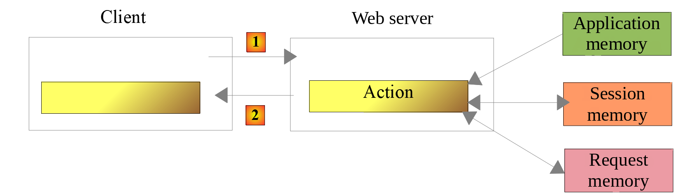

19. Ejercicio práctico – Versión 9
En esta versión, mejoraremos el servidor de la siguiente manera:
- Actualmente, en cada solicitud, los datos de la administración tributaria se obtienen de la base de datos. Usaremos una sesión:
- cuando un usuario realiza su primera solicitud, los datos de la administración tributaria se obtienen de la base de datos y se almacenan en la sesión;
- en las solicitudes siguientes del mismo usuario, los datos de la administración tributaria se obtienen de la sesión. Cabe esperar una ligera mejora en el tiempo de ejecución, ya que las consultas a la base de datos consumen muchos recursos;
- la sesión también garantizará que el usuario se autentique una sola vez;
- El servidor registrará los eventos importantes en un archivo de texto (logs):
- la autenticación exitosa o fallida;
- si los parámetros enviados por el cliente son válidos;
- el resultado del cálculo del impuesto;
- los distintos casos de error;
- en caso de error fatal, se enviará un correo electrónico al administrador de la aplicación.
También habrá que modificar el cliente para que maneje la cookie de sesión que el servidor le enviará.
19.1. El servidor
Nos centramos en el lado servidor de la aplicación.

Esta arquitectura se implementará con los siguientes archivos:
| scripts-web/tax/version-09
├── Dao
│ └── ServerDaoWithSession.php
├── Data
│ ├── .htaccess
│ ├── config-server.json
│ └── logs.txt
├── Tests
│ └── ServerDaoTest.php
├── Utilities
│ ├── Logger.php
│ └── SendAdminMail.php
└── tax-server.php
|
Los demás archivos provienen de las versiones 5 y 8.
19.1.1. Utilidades
19.1.1.1. La clase [Logger]
La clase [Logger] se usará para escribir registros (logs) en un archivo de texto:
| <?php
declare(strict_types=1);
// espacio de nombres
namespace Application;
// un registro en un archivo de texto
final readonly class Logger
{
// constructor: el archivo de registro se crea si no existe
public function __construct(private string $logsFilename)
{
// verificamos que podemos escribir en el archivo (agregando una cadena vacía)
if (@file_put_contents($logsFilename, "", FILE_APPEND) === false) {
throw new TaxException("Failed to create the log file [$logsFilename]", 50);
}
}
// escritura de un mensaje en los registros, precedido de la fecha y la hora
public function write(string $message): void
{
$date = (new \DateTimeImmutable())->format("d/m/y H:i:s.v");
// FILE_APPEND: escribimos al final del archivo
// LOCK_EX: el archivo se bloquea durante la escritura
file_put_contents($this->logsFilename, "$date : $message\n", FILE_APPEND | LOCK_EX);
}
}
|
Comentarios
- Línea 9: la clase es [final] (no se puede derivar de ella) y [readonly]: su único atributo, el nombre del archivo de registro, no puede modificarse una vez creado el objeto;
- línea 12: el constructor de la clase recibe como parámetro el nombre del archivo de registro;
- línea 15: verificamos que se puede escribir en el archivo añadiéndole una cadena vacía. La bandera [FILE_APPEND] garantiza que el archivo se cree si no existe y que su contenido se conserve en caso contrario. El operador [@] impide que PHP muestre una advertencia en caso de falla: nosotros manejamos el error;
- línea 16: si la operación de escritura falló, se lanza una excepción;
- línea 21: el método [write] escribe el mensaje [$message] en el archivo de registro, precedido de la fecha y la hora. El formato [d/m/y H:i:s.v] especifica el día, el mes y el año (con dos dígitos), seguidos de las horas, los minutos, los segundos y los milisegundos;
- Línea 26: la función [file_put_contents] abre el archivo, le agrega la línea y lo cierra. Por lo tanto, ya no existe un método [close] como en la versión PHP 7 de la clase, que mantenía el archivo abierto entre dos escrituras.
La aplicación del servidor puede atender a varios clientes simultáneamente. Sin embargo, hay un único archivo de registro para todos ellos. Por lo tanto, existe el riesgo de acceso concurrente al escribir en el archivo. El curso de PHP 7 ignoraba este problema. Aquí, la bandera [LOCK_EX] indica a [file_put_contents] que bloquee el archivo durante la escritura: si otra solicitud intenta escribir al mismo tiempo, espera a que se libere el bloqueo. Así, una línea de registro nunca se mezcla con otra. Sin embargo, las líneas escritas por dos solicitudes simultáneas pueden quedar intercaladas entre sí.
19.1.1.2. La clase [SendAdminMail]
La clase [SendAdminMail] permite enviar un correo electrónico al administrador de la aplicación en caso de falla:
| <?php
declare(strict_types=1);
// espacio de nombres
namespace Application;
// dependencias de Symfony Mailer
use Symfony\Component\Mailer\Mailer;
use Symfony\Component\Mailer\Transport;
use Symfony\Component\Mime\Email;
// envío de un correo electrónico al administrador de la aplicación
final readonly class SendAdminMail
{
// $config: la información necesaria para enviar el correo
// $logger: un registro opcional para anotar el resultado del envío
public function __construct(private array $config, private ?Logger $logger = null)
{
}
// envío del mensaje [$message] al administrador
// el método no lanza ninguna excepción: un fallo de envío solo se anota en los registros
public function send(string $message): void
{
// el correo se envía al servidor SMTP $this->config["smtp-server"] en el puerto $this->config["smtp-port"]
// desde $this->config["from"] al destinatario $this->config["to"]
// con el asunto $this->config["subject"] y los adjuntos $this->config["attachments"]
// si $this->config["tls"] es true, la conexión es segura y autenticada
$config = $this->config;
try {
// creación del mensaje
$email = (new Email())
->from($config["from"])
->to($config["to"])
->subject($config["subject"])
->text($message);
// archivos adjuntos
foreach ($config["attachments"] as $attachment) {
if (file_exists($attachment)) {
$email->attachFromPath($attachment);
} else {
$this->logger?->write("The attachment [$attachment] does not exist");
}
}
// el transporte del mensaje
$dsn = "smtp://{$config["smtp-server"]}:{$config["smtp-port"]}";
if ($config["tls"]) {
// conexión segura (STARTTLS) y autenticada
$verifyPeer = ($config["verify-peer"] ?? true) ? 1 : 0;
$dsn = sprintf("smtp://%s:%s@%s:%d?require_tls=1&verify_peer=%d",
rawurlencode($config["user"]), rawurlencode($config["password"]),
$config["smtp-server"], $config["smtp-port"], $verifyPeer);
}
// envío del mensaje
(new Mailer(Transport::fromDsn($dsn)))->send($email);
$this->logger?->write("Message [$message] sent to {$config["to"]}");
} catch (\Throwable $ex) {
// fallo de envío
$this->logger?->write("Error while sending the message [$message]: {$ex->getMessage()}");
}
}
}
|
Comentarios
- Líneas 9–11: el curso de PHP 7 usaba la biblioteca [SwiftMailer], que ya no recibe mantenimiento. Nosotros usamos [Symfony Mailer], presentado en el capítulo sobre funciones de red;
- Línea 18: el constructor recibe dos parámetros:
- [$config]: un arreglo asociativo que contiene toda la información necesaria para enviar el correo electrónico;
- [$logger]: un registro para guardar el resultado del envío del correo electrónico. Este parámetro es opcional; su valor por defecto es [null];
- línea 24: el método [send] envía el mensaje [$message]. El código es el de la función [sendmail] del script [smtp-02.php] del capítulo sobre funciones de red;
- Línea 43: el operador null-safe [?->] (PHP 8.0) llama al método [write] solo si [$this->logger] no es [null]. Reemplaza la prueba [if ($this->logger !== NULL)] del script de PHP 7;
- línea 58: el método [send] captura todos los errores: una falla en el envío del correo electrónico solo se registra. Un error en el manejo de errores no debe impedir que el servidor responda a su cliente.
El arreglo asociativo [$config] tendrá la siguiente forma:
| "adminMail": {
"smtp-server": "localhost",
"smtp-port": 1025,
"from": "guest@localhost",
"to": "guest@localhost",
"subject": "tax calculation server crash",
"tls": false,
"attachments": []
},
|
El correo electrónico se envía al servidor [Mailpit] descrito en el capítulo sobre funciones de red, que escucha en el puerto 1025 de la máquina [localhost] y almacena todos los correos electrónicos que recibe. Debe estar iniciado (archivo [mailpit.bat] en la carpeta [scripts-console/inet/mailpit]).
19.1.2. La capa [dao]
La capa [dao] de la versión 9 se implementa con la siguiente clase [ServerDaoWithSession]:
| <?php
declare(strict_types=1);
// espacio de nombres
namespace Application;
// una capa [dao] que se puede construir a partir de datos tributarios ya adquiridos
class ServerDaoWithSession extends ServerDao
{
// el constructor recibe:
// - o bien el nombre del archivo JSON que describe la base de datos: los datos tributarios se leen de la base de datos
// - o bien los propios datos tributarios, ya adquiridos (por ejemplo en la sesión)
public function __construct(string|TaxAdminData $source)
{
if ($source instanceof TaxAdminData) {
// caso más simple: los datos ya están disponibles
$this->taxAdminData = $source;
} else {
// delegamos en la clase padre, que sabe usar la base de datos
parent::__construct($source);
}
}
}
|
Comentarios
- Línea 9: la clase [ServerDaoWithSession] de la versión 9 extiende la clase [ServerDao] de la versión 8. Esto se debe a que la clase [ServerDao] ya es capaz de usar la base de datos. Solo queda manejar el caso en que los datos de la administración tributaria ya se han obtenido;
- línea 14: el constructor recibe un parámetro que puede ser de dos tipos. El tipo unión [string|TaxAdminData] (PHP 8.0) lo define de la siguiente manera:
- una cadena: el nombre del archivo que contiene la información necesaria para conectarse a la base de datos, si los datos de la administración tributaria aún no se han obtenido;
- un objeto [TaxAdminData]: los datos de la administración tributaria, si ya se han obtenido;
- líneas 16–18: el operador [instanceof] determina cuál de los dos tipos se recibió. Si son datos tributarios, se almacenan en el atributo [taxAdminData], heredado de la clase [ServerDao]. Por eso este atributo se declaró como [protected readonly] en la versión 8. La clase PHP de la versión 7 tenía un constructor con dos parámetros, uno de los cuales debía ser [NULL];
- línea 21: de lo contrario, se transfiere el control al constructor de la clase padre, que obtiene los datos de la base de datos.
Cuando se inicia una sesión web, la capa [dao] se construirá con el nombre del archivo de la base de datos. Los datos de la administración tributaria se obtendrán entonces de la base de datos y se almacenarán en la sesión. En las solicitudes posteriores dentro de la misma sesión, la capa [dao] se construirá con el objeto [TaxAdminData] de la sesión. Por lo tanto, no habrá ninguna consulta a la base de datos.
19.1.3. El script del servidor
El script del servidor [tax-server.php] se configura mediante el siguiente archivo JSON: [config-server.json]:
| {
"databaseFilename": "../version-08/Data/database-mysql.json",
"dependencies": [
"../../../scripts-console/tax/version-05/Entities/TaxException.php",
"../../../scripts-console/tax/version-05/Entities/TaxAdminData.php",
"../../../scripts-console/tax/version-05/Entities/Database.php",
"../../../scripts-console/tax/version-05/Utilities/Utilities.php",
"../version-08/Dao/InterfaceServerDao.php",
"../version-08/Dao/ServerDao.php",
"Dao/ServerDaoWithSession.php",
"../version-08/Business/InterfaceServerBusiness.php",
"../version-08/Business/ServerBusiness.php",
"Utilities/Logger.php",
"Utilities/SendAdminMail.php"
],
"users": [
{
"login": "admin",
"passwd": "admin"
}
],
"adminMail": {
"smtp-server": "localhost",
"smtp-port": 1025,
"from": "guest@localhost",
"to": "guest@localhost",
"subject": "tax calculation server crash",
"tls": false,
"attachments": []
},
"logsFilename": "Data/logs.txt"
}
|
- línea 2: se usa la descripción de la base de datos MySQL de la versión 8;
- líneas 3–15: los archivos de las versiones 5 y 8, y los tres archivos nuevos de la versión 9;
- líneas 22–30: la información necesaria para enviar un correo electrónico al administrador. Ahora tienen tipos JSON apropiados: un número para el puerto, un booleano para [tls]. El archivo de PHP 7 usaba cadenas (["25"], ["FALSE"]);
- línea 31: el archivo de registro, relativo a la carpeta [version-09] del servidor. Se encuentra en la carpeta [Data], protegida por el archivo [.htaccess] de la versión 8: los registros no deben ser legibles por cualquiera.
El script del servidor [tax-server.php] cambia de la siguiente manera:
| <?php
// respeto estricto de los tipos declarados de los parámetros y resultados de las funciones
declare(strict_types=1);
// espacio de nombres
namespace Application;
// dependencias de Symfony
use Symfony\Component\HttpFoundation\JsonResponse;
use Symfony\Component\HttpFoundation\Request;
use Symfony\Component\HttpFoundation\Response;
use Symfony\Component\HttpFoundation\Session\Session;
// los errores de PHP no se envían al cliente (van al registro del servidor web)
ini_set("display_errors", "0");
// la carpeta raíz del servidor: las rutas del archivo de configuración son relativas a esta carpeta
const ROOT_DIRECTORY = __DIR__;
// ruta del archivo de configuración
const CONFIG_FILENAME = ROOT_DIRECTORY . "/Data/config-server.json";
// recuperamos la configuración
$config = json_decode(file_get_contents(CONFIG_FILENAME), true, flags: JSON_THROW_ON_ERROR);
// incluimos las dependencias necesarias para el script
require_once ROOT_DIRECTORY . "/../../../vendor/autoload.php";
foreach ($config["dependencies"] as $dependency) {
require_once ROOT_DIRECTORY . "/$dependency";
}
// sesión (después de cargar la clase [TaxAdminData], de la que puede haber un objeto en la sesión)
$session = new Session();
$session->start();
// creación del archivo de registro
try {
$logger = new Logger(ROOT_DIRECTORY . "/" . $config["logsFilename"]);
} catch (TaxException $ex) {
// error 500 sin registros - el mensaje no debe revelar el árbol de archivos del servidor
$message = "Failed to create the log file [{$config["logsFilename"]}]";
doInternalServerError($message, $config["adminMail"]);
// listo
exit;
}
// 1.er registro
$logger->write("---new request");
// recuperamos la solicitud actual
$request = Request::createFromGlobals();
// autenticación solo la 1.ª vez
if (!$session->has("user")) {
// registro
$logger->write("Authentication in progress…");
// las credenciales enviadas por el cliente (null si no envió ninguna)
$requestUser = $request->getUser();
$requestPassword = $request->getPassword();
// ¿el usuario es uno de los usuarios autorizados?
$found = $requestUser !== null && $requestPassword !== null
&& array_any(
$config["users"],
fn(array $user): bool => $user["login"] === $requestUser && hash_equals($user["passwd"], $requestPassword)
);
if (!$found) {
// no encontrado - código 401
sendResponse(
["error" => "Authentication failed [$requestUser]"],
Response::HTTP_UNAUTHORIZED,
["WWW-Authenticate" => 'Basic realm="Tax calculation server"'],
$logger
);
// listo
exit;
}
// anotamos en la sesión que el usuario ha sido autenticado
$session->set("user", $requestUser);
// registro
$logger->write("Authentication successful [$requestUser]");
} else {
// registro
$logger->write("Authentication taken from the session…");
}
// tenemos un usuario válido - verificamos los parámetros recibidos
$errors = [];
// debemos tener una solicitud GET con tres parámetros
if ($request->getMethod() !== "GET" || $request->query->count() !== 3) {
$errors[] = "GET method required with only the parameters [married, children, salary]";
}
// el estado civil
if (!$request->query->has("married")) {
$errors[] = "missing married parameter";
} else {
$married = strtolower(trim($request->query->getString("married")));
if (!in_array($married, ["yes", "no"], true)) {
$errors[] = "invalid married parameter [$married]";
}
}
// el número de hijos y el salario: enteros >= 0
$values = [];
foreach (["children", "salary"] as $parameter) {
if (!$request->query->has($parameter)) {
$errors[] = "missing $parameter parameter";
continue;
}
$value = trim($request->query->getString($parameter));
if (preg_match('/^\d+$/', $value) !== 1) {
$errors[] = "invalid $parameter parameter [$value]";
} else {
$values[$parameter] = (int) $value;
}
}
// ¿otros parámetros en la solicitud?
foreach (array_diff(array_keys($request->query->all()), ["married", "children", "salary"]) as $parameter) {
$errors[] = "invalid parameter [$parameter]";
}
// ¿errores?
if ($errors !== []) {
// enviamos un código de error 400 al cliente
sendResponse(["errors" => $errors], Response::HTTP_BAD_REQUEST, [], $logger);
// listo
exit;
}
// registro
[$children, $salary] = [$values["children"], $values["salary"]];
$logger->write("valid parameters ['married'=>$married, 'children'=>$children, 'salary'=>$salary]");
// tenemos todo lo necesario para trabajar
// creación de la capa [dao]
if (!$session->has("taxAdminData")) {
// los datos tributarios se toman de la base de datos
$logger->write("tax data taken from the database");
try {
// construcción de la capa [dao]
$dao = new ServerDaoWithSession(ROOT_DIRECTORY . "/" . $config["databaseFilename"]);
// ponemos los datos tributarios en la sesión
$session->set("taxAdminData", $dao->getTaxAdminData());
} catch (TaxException $ex) {
// error 500
doInternalServerError($ex->getMessage(), $config["adminMail"], $logger);
// listo
exit;
}
} else {
// los datos tributarios se toman de la sesión
$dao = new ServerDaoWithSession($session->get("taxAdminData"));
// registro
$logger->write("tax data taken from the session");
}
// creación de la capa [business]
$business = new ServerBusiness($dao);
// cálculo del impuesto
$result = $business->calculateTax($married, $children, $salary);
// devolvemos la respuesta
sendResponse($result, Response::HTTP_OK, [], $logger);
// fin
exit;
// --------------------------------------------------------------------------
// error fatal: un correo al administrador y una respuesta 500 al cliente
function doInternalServerError(string $message, array $adminMail, ?Logger $logger = null): void
{
// el mensaje de error de un controlador de SGBD puede no estar codificado en UTF-8 (Windows-1252 en Windows)
if (!mb_check_encoding($message, "UTF-8")) {
$message = mb_convert_encoding($message, "UTF-8", "Windows-1252");
}
// enviamos un correo al administrador
// [SendAdminMail] captura todas las excepciones y las registra él mismo
(new SendAdminMail($adminMail, $logger))->send($message);
// enviamos un código de error 500 al cliente
sendResponse(["error" => $message], Response::HTTP_INTERNAL_SERVER_ERROR, [], $logger);
}
// envío de la respuesta HTTP al cliente
// $result: el arreglo que se enviará, con la forma ["response" => $result]
// $statusCode: el estado HTTP de la respuesta
// $headers: encabezados HTTP que se agregarán a la respuesta
// $logger: el registro de la aplicación (null si no se pudo crear)
function sendResponse(array $result, int $statusCode, array $headers = [], ?Logger $logger = null): void
{
// la respuesta JSON
$response = new JsonResponse(null, $statusCode, $headers);
$response->setEncodingOptions(JSON_UNESCAPED_UNICODE | JSON_UNESCAPED_SLASHES | JSON_PRESERVE_ZERO_FRACTION);
$response->setData(["response" => $result]);
// envío
$response->send();
// registro
$logger?->write($response->getContent());
}
|
Comentarios
- línea 13: se usa la clase [Session] de [HttpFoundation], presentada en el capítulo anterior;
- Línea 16: los errores detectados por PHP (advertencias, errores fatales, etc.) no se muestran en el documento enviado al cliente. Corromperían la respuesta JSON que el cliente espera. Se registran en el registro de errores del servidor web (el archivo [error.log] de Apache);
- líneas 33–34: se inicia una sesión. Se inicia después de cargar los archivos de la aplicación: la sesión puede contener un objeto [TaxAdminData], y la clase [TaxAdminData] debe ser conocida en el momento en que PHP reconstruye los objetos de la sesión;
- Líneas 37–44: se intenta crear el archivo de registro. Si se produce una excepción, se llama a la función [doInternalServerError] sin registro (falta el último parámetro). El mensaje de error incluye el nombre del archivo de registro especificado en la configuración: el mensaje de la excepción contiene la ruta completa del archivo, lo que revelaría al cliente la estructura de carpetas del servidor;
- Línea 162: la función [doInternalServerError] acepta tres parámetros:
- [$message]: el mensaje de error;
- [$adminMail]: la información necesaria para enviar un correo electrónico al administrador de la aplicación;
- [$logger]: el registro de la aplicación, si se pudo crear;
- líneas 165–166: el mensaje de error puede provenir de un controlador de DBMS y puede no estar codificado en UTF-8 (véase la versión 8);
- línea 170: se envía un correo electrónico al administrador de la aplicación;
- línea 172: la respuesta se envía al cliente con el código [500 Internal Server Error];
- línea 180: la función [sendResponse] envía todas las respuestas al cliente. Sus parámetros son:
- [$result]: el arreglo que se enviará. El servidor envía la cadena JSON del arreglo [["response" => $result]];
- [$statusCode]: el estado HTTP de la respuesta;
- [$headers]: los encabezados HTTP que se agregarán a la respuesta. Es el caso del encabezado [WWW-Authenticate] en la respuesta 401;
- [$logger]: el registro de la aplicación;
- línea 183: el constructor de la clase [JsonResponse] acepta los datos, el estado y los encabezados de la respuesta. Los datos se establecen más adelante con [setData], después de elegir las opciones de [json_encode] , que son las de la versión 8;
- línea 189: se registra la respuesta JSON enviada;
- línea 48: la primera entrada de registro de la solicitud;
- línea 53: gracias a la sesión establecida, el cliente se autenticará una sola vez:
- una vez autenticado el cliente, la clave [user] se almacena en la sesión, con el identificador del usuario de la línea 77 como valor;
- durante la siguiente solicitud del mismo cliente, la verificación evita una nueva autenticación innecesaria;
- líneas 67–72: si la autenticación falla, la función [sendResponse] envía una respuesta 401, con el encabezado [WWW-Authenticate];
- líneas 86–118: la validación de parámetros sigue la especificación de la versión 8;
- línea 126: la desestructuración de arreglos [[$a, $b] = [...]] asigna valores a ambas variables [$children] y [$salary] en una sola instrucción. Reemplaza a la función [list] de PHP 7;
- línea 131: gracias a la sesión, los datos se obtendrán de la base de datos una sola vez:
- durante la primera solicitud, la búsqueda en la base de datos se realiza en la línea 136. Los datos obtenidos se almacenan luego en la sesión, asociados a la clave [taxAdminData] en la línea 138;
- en las solicitudes posteriores, la clave [taxAdminData] se encuentra en la sesión y los datos tributarios se transmiten directamente a la capa [dao] en la línea 147;
- líneas 139–143: la búsqueda de los datos tributarios en la base de datos puede fallar. En ese caso, se envía al cliente un código [500 Internal Server Error] y se envía un correo electrónico al administrador;
- línea 156: el resto del código es igual al de la versión anterior, y la respuesta la envía la función [sendResponse].
Observe que las funciones [doInternalServerError] y [sendResponse] se definen al final del script, después de la instrucción [exit]: PHP conoce todas las funciones definidas en el nivel superior de un archivo antes de ejecutar la primera instrucción de ese archivo.
19.1.4. Pruebas con [PHPUnit]
Solo probaremos la capa [dao], que es la única que ha cambiado. El código de la prueba [Tests/ServerDaoTest.php] es el siguiente:
| <?php
// respeto estricto de los tipos declarados de los parámetros y resultados de las funciones
declare(strict_types=1);
// espacio de nombres de las pruebas
namespace Application\Tests;
// la clase probada
use Application\ServerDaoWithSession;
// las clases de PHPUnit
use PHPUnit\Framework\TestCase;
final class ServerDaoTest extends TestCase
{
// la carpeta raíz del servidor
private const string ROOT_DIRECTORY = __DIR__ . "/..";
// la configuración del servidor
private static array $config;
// se ejecuta una vez, antes de la primera prueba de la clase
#[\Override]
public static function setUpBeforeClass(): void
{
// recuperamos la configuración del servidor
self::$config = json_decode(file_get_contents(self::ROOT_DIRECTORY . "/Data/config-server.json"), true, flags: JSON_THROW_ON_ERROR);
// incluimos las dependencias del servidor
foreach (self::$config["dependencies"] as $dependency) {
require_once self::ROOT_DIRECTORY . "/$dependency";
}
}
// los datos de la administración tributaria leídos de la base de datos (1.ª solicitud de una sesión)
public function testTaxAdminData(): void
{
// creación de la capa [dao] a partir del archivo que describe la base de datos
$dao = new ServerDaoWithSession(self::ROOT_DIRECTORY . "/" . self::$config["databaseFilename"]);
$taxAdminData = $dao->getTaxAdminData();
// constantes de cálculo
$this->assertSame(1551.0, $taxAdminData->halfShareQfCeiling);
$this->assertSame(21037.0, $taxAdminData->singleIncomeCeilingForReduction);
$this->assertSame(42074.0, $taxAdminData->coupleIncomeCeilingForReduction);
$this->assertSame(3797.0, $taxAdminData->halfShareReductionValue);
$this->assertSame(1196.0, $taxAdminData->singleDiscountCeiling);
$this->assertSame(1970.0, $taxAdminData->coupleDiscountCeiling);
$this->assertSame(1595.0, $taxAdminData->singleTaxCeilingForDiscount);
$this->assertSame(2627.0, $taxAdminData->coupleTaxCeilingForDiscount);
$this->assertSame(12502.0, $taxAdminData->tenPercentAllowanceMax);
$this->assertSame(437.0, $taxAdminData->tenPercentAllowanceMin);
// tramos del impuesto
$this->assertSame([9964.0, 27519.0, 73779.0, 156244.0, 0.0], $taxAdminData->limits);
$this->assertSame([0.0, 0.14, 0.30, 0.41, 0.45], $taxAdminData->coeffR);
$this->assertSame([0.0, 1394.96, 5798.0, 13913.69, 20163.45], $taxAdminData->coeffN);
}
// los datos de la administración tributaria ya adquiridos (solicitudes siguientes de la sesión)
public function testTaxAdminDataInSession(): void
{
// los datos leídos de la base de datos durante la 1.ª solicitud
$databaseFilename = self::ROOT_DIRECTORY . "/" . self::$config["databaseFilename"];
$taxAdminData = (new ServerDaoWithSession($databaseFilename))->getTaxAdminData();
// creación de la capa [dao] a partir de estos datos, como durante las solicitudes siguientes de la sesión
$dao = new ServerDaoWithSession($taxAdminData);
// la capa [dao] devuelve el mismo objeto, sin acceder a la base de datos
$this->assertSame($taxAdminData, $dao->getTaxAdminData());
}
}
|
- líneas 23–31: creamos un entorno de ejecución idéntico al del script del servidor [tax-server.php];
- línea 37: para construir la capa [dao], se instancia la clase [ServerDaoWithSession] con el nombre del archivo de la base de datos. Luego la prueba verifica la versión 8;
- Líneas 57–65: una segunda prueba verifica la construcción de la capa [dao] a partir de datos tributarios obtenidos previamente: la capa [dao] debe devolver el mismo objeto, lo cual se verifica con [assertSame].
Los resultados de la prueba son los siguientes:
| > php vendor/bin/phpunit scripts-web/tax/version-09/Tests --testdox
PHPUnit 12.5.37 by Sebastian Bergmann and contributors.
Runtime: PHP 8.5.11
Configuration: .../php8-oct-2026/phpunit.xml
.. 2 / 2 (100%)
Time: 00:00.004, Memory: 16.00 MB
Server Dao (Application\Tests\ServerDao)
✔ Tax admin data
✔ Tax admin data in session
OK (2 tests, 14 assertions)
|
19.2. El cliente
Nos centramos en la parte cliente de la aplicación.

Esta arquitectura se implementará con los siguientes archivos:
| scripts-console/tax/version-09
├── Dao
│ └── ClientDao.php
├── Data
│ ├── config-client-ko.json
│ ├── config-client.json
│ ├── errors.json
│ ├── results.json
│ └── taxpayersdata.json
├── Main
│ └── MainTaxClient.php
└── Tests
└── ClientBusinessTest.php
|
En la nueva versión, los únicos cambios son:
- el archivo de configuración [config-client.json];
- la capa [dao] del cliente.
El script [MainTaxClient.php] es el de la versión 8.
19.2.1. La capa [dao]
La capa [dao] ha cambiado de la siguiente manera:
| <?php
declare(strict_types=1);
// espacio de nombres
namespace Application;
// dependencias de Symfony
use Symfony\Component\HttpClient\HttpClient;
use Symfony\Contracts\HttpClient\Exception\ExceptionInterface;
use Symfony\Contracts\HttpClient\HttpClientInterface;
// la capa [dao] del cliente: un cliente HTTP del servidor de cálculo de impuestos que gestiona una sesión
class ClientDao implements InterfaceClientDao
{
// el trait de la versión 5 implementa los métodos [getTaxPayersData] y [saveResults] de la interfaz
use TraitDao;
// el cliente HTTP
private readonly HttpClientInterface $httpClient;
// la cookie de sesión (null mientras el servidor no la haya enviado)
private ?string $sessionCookie = null;
// constructor
// $urlServer: la URL del servidor de cálculo de impuestos
// $user: el usuario que hace las solicitudes, arreglo [login, passwd]
// $httpClientOptions: opciones adicionales del cliente HTTP (verify_peer, verify_host...)
public function __construct(
private readonly string $urlServer,
#[\SensitiveParameter] private readonly array $user,
array $httpClientOptions = [],
) {
// el cliente HTTP: las credenciales del usuario solo se enviarán con la 1.ª solicitud
$this->httpClient = HttpClient::create($httpClientOptions);
}
// cálculo del impuesto por el servidor
#[\Override]
public function calculateTax(string $married, int $children, int $salary): array
{
// las opciones de la solicitud: los parámetros que espera el servidor
$options = [
"query" => [
"married" => $married,
"children" => $children,
"salary" => $salary,
],
];
if ($this->sessionCookie === null) {
// aún no hay sesión: enviamos las credenciales del usuario
$options["auth_basic"] = [$this->user["login"], $this->user["passwd"]];
} else {
// enviamos la cookie de sesión: el usuario ya está autenticado en esta sesión
$options["headers"] = ["Cookie" => $this->sessionCookie];
}
try {
// hacemos la solicitud al servidor
$response = $this->httpClient->request("GET", $this->urlServer, $options);
// el estado, los encabezados y el documento JSON de la respuesta, incluso en caso de error (parámetro false)
$statusCode = $response->getStatusCode();
$headers = $response->getHeaders(false);
$json = $response->getContent(false);
} catch (ExceptionInterface $ex) {
// no se pudo contactar al servidor
throw new TaxException("Error communicating with the server ({$ex->getMessage()})", 40, $ex);
}
// registros
// print "$json\n";
// el servidor envía la cadena JSON de un arreglo ["response" => algo]
try {
$serverResponse = json_decode($json, true, flags: JSON_THROW_ON_ERROR)["response"] ?? null;
} catch (\JsonException $ex) {
$serverResponse = null;
}
if (!is_array($serverResponse)) {
throw new TaxException("Invalid server response [$json]", 41);
}
// ¿error?
if ($statusCode !== 200) {
// lanzamos una excepción cuyo mensaje es la respuesta del servidor completada con su estado HTTP
$message = json_encode(
["HTTP status" => $statusCode] + $serverResponse,
JSON_UNESCAPED_UNICODE | JSON_UNESCAPED_SLASHES | JSON_THROW_ON_ERROR
);
throw new TaxException($message, 42);
}
// recuperamos la cookie de sesión si aún no se conoce
if ($this->sessionCookie === null) {
foreach ($headers["set-cookie"] ?? [] as $cookie) {
if (preg_match('/^PHPSESSID=(.+?);/', $cookie, $fields) === 1) {
$this->sessionCookie = "PHPSESSID=$fields[1]";
}
}
}
// devolvemos la respuesta: el arreglo [tax, surcharge, discount, reduction, rate]
return $serverResponse;
}
}
|
Comentarios
El cambio en la capa [dao] consiste ahora en manejar una sesión:
- línea 22: la cookie de sesión. Su valor es [null] hasta que el servidor la envía. Este atributo no es [readonly]: su valor cambia después de la primera solicitud;
- línea 30: las credenciales del usuario ahora se almacenan en un atributo, ya que no se envían con cada solicitud;
- línea 34: el cliente HTTP se crea sin la opción [auth_basic];
- líneas 49–51: durante la primera solicitud, la cookie no existe; por lo tanto, la solicitud se envía al servidor junto con la información de autenticación. La opción [auth_basic] ahora forma parte de la propia solicitud, y no del cliente HTTP;
- líneas 52–55: en las solicitudes posteriores, la cookie de sesión normalmente está presente. En ese caso, no se envía la información de autenticación; en su lugar, la cookie se envía en el encabezado HTTP [Cookie];
- línea 61: obtenemos los encabezados de la respuesta. Como con [getContent], el parámetro [false] evita una excepción si el estado de la respuesta indica un error;
- Líneas 88–94: la respuesta del servidor a la primera solicitud incluye una cookie de sesión en un encabezado [Set-Cookie]. La obtenemos como se describió en el capítulo anterior y la almacenamos en el atributo [$sessionCookie].
Podríamos haber conservado la versión anterior de la capa [dao] y realizar la autenticación en cada solicitud, ya que su costo es insignificante. Sin embargo, con fines didácticos, quisimos mostrar cómo un cliente HTTP puede manejar una sesión.
19.2.2. El archivo de configuración
El archivo de configuración JSON cambia de la siguiente manera:
| {
"urlServer": "http://localhost/php8-oct-2026/scripts-web/tax/version-09/tax-server.php",
"user": {
"login": "admin",
"passwd": "admin"
},
"httpClientOptions": {
"verify_peer": false,
"verify_host": false
},
"taxPayersDataFilename": "Data/taxpayersdata.json",
"resultsFilename": "Data/results.json",
"errorsFilename": "Data/errors.json",
"dependencies": [
"../version-05/Entities/TaxException.php",
"../version-05/Entities/TaxPayerData.php",
"../version-05/Utilities/Utilities.php",
"../version-05/Dao/TraitDao.php",
"../version-08/Dao/InterfaceClientDao.php",
"Dao/ClientDao.php",
"../version-08/Business/InterfaceClientBusiness.php",
"../version-08/Business/ClientBusiness.php"
]
}
|
- línea 2: la URL del servidor de la versión 9;
- líneas 14–23: solo la capa [dao] es nueva. Los demás archivos son de las versiones 5 y 8.
19.3. Algunas pruebas
Para estas pruebas, el servidor Apache, el DBMS MySQL y el servidor de correo [Mailpit] deben estar en ejecución.
19.3.1. Prueba 1
Primero, ejecutamos el cliente en un entorno sin errores:
| > php MainTaxClient.php
The results have been saved in the file [Data/results.json]
Done
|
Los resultados son los mismos que en las versiones anteriores. Pero ahora, en el lado del servidor, hay un archivo de registro llamado [Data/logs.txt]:
| 01/10/26 18:08:11.971 : ---new request
01/10/26 18:08:11.972 : Authentication in progress…
01/10/26 18:08:11.972 : Authentication successful [admin]
01/10/26 18:08:11.972 : valid parameters ['married'=>yes, 'children'=>2, 'salary'=>55555]
01/10/26 18:08:11.972 : tax data taken from the database
01/10/26 18:08:11.973 : {"response":{"tax":2814,"surcharge":0,"discount":0,"reduction":0,"rate":0.14}}
01/10/26 18:08:11.976 : ---new request
01/10/26 18:08:11.977 : Authentication taken from the session…
01/10/26 18:08:11.977 : valid parameters ['married'=>yes, 'children'=>2, 'salary'=>50000]
01/10/26 18:08:11.977 : tax data taken from the session
01/10/26 18:08:11.977 : {"response":{"tax":1384,"surcharge":0,"discount":384,"reduction":347,"rate":0.14}}
01/10/26 18:08:11.979 : ---new request
01/10/26 18:08:11.979 : Authentication taken from the session…
01/10/26 18:08:11.979 : valid parameters ['married'=>yes, 'children'=>3, 'salary'=>50000]
01/10/26 18:08:11.980 : tax data taken from the session
01/10/26 18:08:11.980 : {"response":{"tax":0,"surcharge":0,"discount":720,"reduction":0,"rate":0.14}}
…
|
- Líneas 1–6: durante la primera solicitud, se realiza la autenticación y se obtienen los datos de la base de datos;
- Líneas 7–11: durante la siguiente solicitud, no hay autenticación y los datos se obtienen de la sesión. Este patrón se repite en las solicitudes posteriores (líneas 12 en adelante).
19.3.2. Prueba 2
Ahora simulemos una falla del DBMS MySQL como en la versión 8 (puerto 3307 en el archivo [version-08/Data/database-mysql.json]). En el lado del cliente, obtenemos la siguiente salida en la consola:
| > php MainTaxClient.php
Error no. 42: {"HTTP status":500,"error":"Database access error (SQLSTATE[HY000] [2002] Connection refused)"}
Done
|
En el lado del servidor, vemos los siguientes registros:
| 01/10/26 18:06:48.367 : ---new request
01/10/26 18:06:48.367 : Authentication in progress…
01/10/26 18:06:48.367 : Authentication successful [admin]
01/10/26 18:06:48.367 : valid parameters ['married'=>yes, 'children'=>2, 'salary'=>55555]
01/10/26 18:06:48.367 : tax data taken from the database
01/10/26 18:06:48.450 : Message [Database access error (SQLSTATE[HY000] [2002] Connection refused)] sent to guest@localhost
01/10/26 18:06:48.450 : {"response":{"error":"Database access error (SQLSTATE[HY000] [2002] Connection refused)"}}
|
- Línea 6: el correo electrónico enviado al administrador;
- línea 7: la respuesta enviada al cliente.
La interfaz web de [Mailpit] [http://localhost:8025] muestra el correo electrónico recibido por el administrador:

El curso de PHP 7 leía este correo electrónico con el script [imap-03.php] del capítulo sobre funciones de red. Esto todavía puede hacerse con el servidor POP3 de [Mailpit]. La pestaña [Raw] de [Mailpit] muestra el texto sin formato del correo electrónico:
| Return-Path: <guest@localhost>
Received: from [127.0.0.1] (localhost [127.0.0.1])
by vm (Mailpit) with SMTP
for <guest@localhost>; Thu, 1 Oct 2026 18:06:48 +0200 (CEST)
From: guest@localhost
To: guest@localhost
Subject: tax calculation server crash
Message-ID: <abc3d7c0b4e68b2d5e70d6710a13a897@localhost>
MIME-Version: 1.0
Date: Thu, 01 Oct 2026 18:06:48 +0200
Content-Type: text/plain; charset=utf-8
Content-Transfer-Encoding: quoted-printable
Database access error (SQLSTATE[HY000] [2002] =
Connection refused)
|
- línea 7: el asunto contiene solo caracteres ASCII, por lo que no está codificado (un asunto con caracteres no ASCII se codificaría según la RFC 2047);
- Líneas 11–12: el texto del correo electrónico está en UTF-8, codificado en [quoted-printable]: los caracteres no ASCII estarían codificados (por ejemplo, [è] se convierte en [=C3=A8]), y el carácter [=] al final de la línea 14 indica que la línea continúa en la siguiente.
19.3.3. Prueba 3
Ahora, hagamos que no se pueda crear el archivo [logs.txt] . Para ello, basta con eliminar el archivo [Data/logs.txt] y crear en su lugar una carpeta llamada [Data/logs.txt]. Hecho esto, ejecutemos el cliente. En el lado del cliente, obtenemos la siguiente salida en la consola:
| > php MainTaxClient.php
Error no. 42: {"HTTP status":500,"error":"Failed to create the log file [Data/logs.txt]"}
Done
|
En el lado del servidor no hay registros, pero el administrador recibe el siguiente correo electrónico:
| Return-Path: <guest@localhost>
Received: from [127.0.0.1] (localhost [127.0.0.1])
by vm (Mailpit) with SMTP
for <guest@localhost>; Thu, 1 Oct 2026 18:07:32 +0200 (CEST)
From: guest@localhost
To: guest@localhost
Subject: tax calculation server crash
Message-ID: <4ec9aec48972386b80bbcbb0e2967dfd@localhost>
MIME-Version: 1.0
Date: Thu, 01 Oct 2026 18:07:32 +0200
Content-Type: text/plain; charset=utf-8
Content-Transfer-Encoding: quoted-printable
Failed to create the log file [Data/logs.txt]
|
Luego eliminamos la carpeta [Data/logs.txt].
19.3.4. Prueba 4
Esta vez, usemos la configuración [config-client-ko.json], que proporciona al cliente credenciales incorrectas. El cliente muestra la siguiente salida en la consola:
| > php MainTaxClient.php config-client-ko.json
Error no. 42: {"HTTP status":401,"error":"Authentication failed [x]"}
Done
|
En el lado del servidor, aparecen los siguientes registros:
| 01/10/26 18:07:08.838 : ---new request
01/10/26 18:07:08.838 : Authentication in progress…
01/10/26 18:07:08.839 : {"response":{"error":"Authentication failed [x]"}}
|
19.3.5. Prueba 5
Ahora, solicitemos al servidor la URL [http://localhost/php8-oct-2026/scripts-web/tax/version-09/tax-server.php] sin pasar ningún parámetro:
| > curl -u admin:admin http://localhost/php8-oct-2026/scripts-web/tax/version-09/tax-server.php
{"response":{"errors":["GET method required with only the parameters [married, children, salary]","missing married parameter","missing children parameter","missing salary parameter"]}}
|
En el archivo de registro [logs.txt] del servidor, vemos las siguientes líneas:
| 01/10/26 18:07:08.894 : ---new request
01/10/26 18:07:08.894 : Authentication in progress…
01/10/26 18:07:08.894 : Authentication successful [admin]
01/10/26 18:07:08.895 : {"response":{"errors":["GET method required with only the parameters [married, children, salary]","missing married parameter","missing children parameter","missing salary parameter"]}}
|
19.4. Pruebas con [PHPUnit]
Como hicimos en las versiones anteriores, ejecutaremos la prueba [PHPUnit] de la capa [business] del cliente, [Tests/ClientBusinessTest.php]. En comparación con la clase de prueba de la versión 8, no ha cambiado nada: la prueba construye su entorno a partir del archivo de configuración del cliente de la versión 9, ubicado en la carpeta [Data] de esa versión.
Los resultados de la prueba son los siguientes:
| > php vendor/bin/phpunit scripts-console/tax/version-09/Tests --testdox
PHPUnit 12.5.37 by Sebastian Bergmann and contributors.
Runtime: PHP 8.5.11
Configuration: .../php8-oct-2026/phpunit.xml
........... 11 / 11 (100%)
Time: 00:00.063, Memory: 16.00 MB
Client Business (Application\Tests\ClientBusiness)
✔ Calculate tax with data set "couple, 2 children, 55555"
✔ Calculate tax with data set "couple, 2 children, 50000"
✔ Calculate tax with data set "couple, 3 children, 50000"
✔ Calculate tax with data set "single, 2 children, 100000"
✔ Calculate tax with data set "single, 3 children, 100000"
✔ Calculate tax with data set "couple, 3 children, 100000"
✔ Calculate tax with data set "couple, 5 children, 100000"
✔ Calculate tax with data set "single, 0 children, 100000"
✔ Calculate tax with data set "couple, 2 children, 30000"
✔ Calculate tax with data set "single, 0 children, 200000"
✔ Calculate tax with data set "couple, 3 children, 200000"
OK (11 tests, 22 assertions)
|
Conviene echar un vistazo a los registros [logs.txt] del servidor:
| 01/10/26 18:08:07.348 : ---new request
01/10/26 18:08:07.348 : Authentication in progress…
01/10/26 18:08:07.348 : Authentication successful [admin]
01/10/26 18:08:07.348 : valid parameters ['married'=>yes, 'children'=>2, 'salary'=>55555]
01/10/26 18:08:07.348 : tax data taken from the database
01/10/26 18:08:07.349 : {"response":{"tax":2814,"surcharge":0,"discount":0,"reduction":0,"rate":0.14}}
01/10/26 18:08:07.354 : ---new request
01/10/26 18:08:07.354 : Authentication in progress…
01/10/26 18:08:07.354 : Authentication successful [admin]
01/10/26 18:08:07.354 : valid parameters ['married'=>yes, 'children'=>2, 'salary'=>50000]
01/10/26 18:08:07.354 : tax data taken from the database
01/10/26 18:08:07.355 : {"response":{"tax":1384,"surcharge":0,"discount":384,"reduction":347,"rate":0.14}}
01/10/26 18:08:07.359 : ---new request
01/10/26 18:08:07.359 : Authentication in progress…
01/10/26 18:08:07.359 : Authentication successful [admin]
01/10/26 18:08:07.359 : valid parameters ['married'=>yes, 'children'=>3, 'salary'=>50000]
01/10/26 18:08:07.359 : tax data taken from the database
01/10/26 18:08:07.360 : {"response":{"tax":0,"surcharge":0,"discount":720,"reduction":0,"rate":0.14}}
…
01/10/26 18:08:07.397 : ---new request
01/10/26 18:08:07.397 : Authentication in progress…
01/10/26 18:08:07.397 : Authentication successful [admin]
01/10/26 18:08:07.397 : valid parameters ['married'=>yes, 'children'=>3, 'salary'=>200000]
01/10/26 18:08:07.397 : tax data taken from the database
01/10/26 18:08:07.398 : {"response":{"tax":42842,"surcharge":17283,"discount":0,"reduction":0,"rate":0.41}}
|
Vemos que los datos de la administración tributaria siempre se obtienen de la base de datos y nunca de la sesión. Volvamos al código de la prueba que se ejecutó:
| // se ejecuta antes de cada prueba
#[\Override]
protected function setUp(): void
{
// creación de las capas [dao] y [business] como en el script principal
$clientDao = new ClientDao(self::$config["urlServer"], self::$config["user"], self::$config["httpClientOptions"]);
$this->business = new ClientBusiness($clientDao);
}
|
- Línea 41: el método [setUp] se ejecuta antes de cada prueba. Por lo tanto, se crea un nuevo [ClientDao] para cada prueba, con una cookie de sesión [null]. Esto explica por qué este cliente no se beneficia de ninguna sesión: es como si las 11 pruebas las realizaran 11 usuarios distintos.
Este ejemplo muestra que la sesión no es el lugar adecuado para almacenar los datos de la administración tributaria. En efecto, estos datos son compartidos por todos los usuarios de la aplicación. Sin embargo, en este caso se duplican en cada una de sus sesiones.
En la programación web, hay tres tipos de visibilidad para los datos compartidos:
- los datos compartidos por todos los usuarios de la aplicación web. Generalmente son datos de solo lectura. PHP no admite de forma nativa este tipo de almacenamiento: cada solicitud la ejecuta un script que parte con la memoria vacía;
- los datos compartidos entre las solicitudes de un mismo cliente. Estos datos se almacenan en la sesión. Hablamos de sesión del cliente para designar la memoria del cliente. Todas las solicitudes de un cliente tienen acceso a esta sesión. Pueden almacenar y leer información en ella. En los scripts anteriores, esta sesión se implementa mediante el objeto de Symfony [HttpFoundation\Session\Session];
- el contexto de la solicitud. La solicitud de un usuario puede procesarse mediante varias acciones sucesivas. El contexto de la solicitud permite que la acción 1 transmita información a la acción 2. Con [HttpFoundation], la solicitud se implementa mediante el objeto [Request], y su contexto se implementa mediante su atributo [attributes].

Existen herramientas para asignar una memoria de aplicación a PHP. La nueva versión del ejercicio de aplicación muestra el uso de una de ellas.